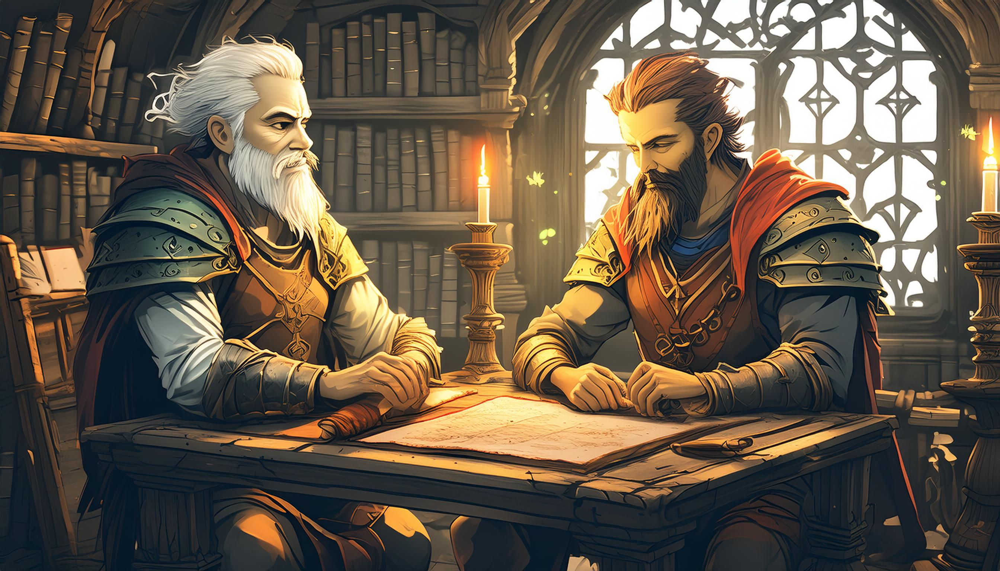

Orin og [Name] sitter ved bordet i deres lille hytte i landsbyen Aridell. Det er en kjølig kveld, og månelyset skinner inn gjennom vinduene. Orin: "Jeg har besøk av en fremmed. Personen sier at du er nødvendig for å redde Eldoria fra dens skjebne."
 Start eventyret